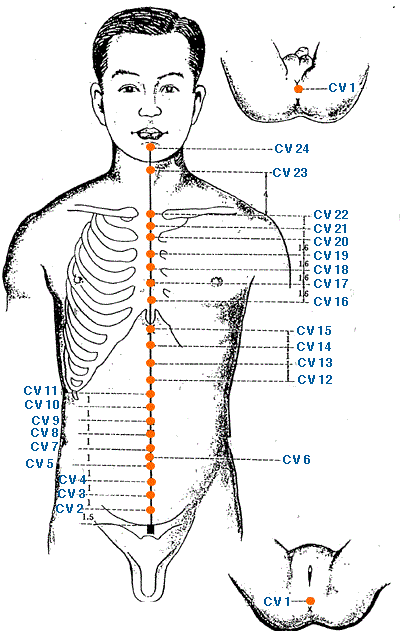

|

|
Meridian Point : CV-1
Location: In the center of the perineum, Males: in between the anus and the scrotum, Females: between the anus and the posterior labial commissure.
English Name: Meeting of Yin
Pinyin Name: Huiyin
Actions & Effect:
Regulates lower yin orifices (genitalia, urethra, anus) - good for all genito-urinary issues, genital pain/itching, retention of urine, uterine prolapse.
Amenorrhea, irregular menstruation.
Hemorrhoids, anal prolapse.
Main point for drowning, coma, manic depression.
Disease
This Acu-point has particular and special qualities but because of its location is not much used. Other points share some of its qualities, such as CV2.
Meridian Point : CV-2
Location: On top of the notch in the center of superior border of the pubic symphysis.
English Name: Curved Bone
Pinyin Name: Qugu
Actions & Effect:
Generally useful for Deficiency and Cold-Type Genito-urinary issues - retention of urine, dribbling urine, frequent urination.
Main point for feminine discharges, "red and white" discharges (leukorrhea) along with other sexual/menstrual issues - dysmenorrhea, irregular cycles.
Male sexual issues such as impotence a/or seminal emission as well as any problems with the genitals (dryness, itching, dampness, pain).
Disease
Irregular menstruation, unsmooth urination, seminal emission, impotence.
Meridian Point : CV-3
Location: 1 cun above CV 2 (pubic symphysis).
English Name: Central Pole
Pinyin Name: Zhong ji
Actions & Effect:
Generally useful for Excess-Type Genito-urinary disorders.
Urinary disorders from excess heat, stagnation a/or dampness - cystitis, dark/burning/urgent/frequent urination, retention of urine.
Main point for damp-heat in the genital area - genital itching w/sensation of heat, rashes, genital herpes, impotence, seminal emission.
Yin excess accumulations - masses below the umbilicus, cold lower abdomen.
Moving and cooling point for Gynecological disorders - dysmenorrhea, amenorrhea, fibroids, leukorrhea, uterine bleeding, uterine prolapse.
Running Piglet Disorder.
Disease
Irregular menstruation, unsmooth urination, seminal emission, impotence, prolapse of the uterus.
Meridian Point : CV-4
Location: 2 cun above CV 2 (pubic symphysis).
English Name: Origin Pass
Pinyin Name: Guan Yuan
Actions & Effect:
Generally, useful for deficiencies of Yin, Yang, Qi & Blood.
Main point for tonifying Prenatal Qi - exhaustion, weakness, chronic fatigue/diseases.
Main point for Kidney deficiencies of Qi, Jing a/or Yang - low back pain, bone disorders, early morning (5 a.m., "cock-crow") diarrhea. rectal prolapse.
Genito-urinary issues with Deficient a/or Cold Patterns - incontinence, clear copious urine, nocturia.
Main point for all menstrual disorders with Deficient, Cold a/or Stagnation Patterns - scanty menstruation, pale blood.
Sexual / Fertility Issues - infertility, impotence, seminal emission, amenorrhea, bleeding during pregnancy.
Yang collapse - chills, profuse sweating, SOB, unconsciousness.
Tong Ren/Tam Healing System: An important point for the storage and development of Qi (energy), useful for deficiency conditions - weakness, shortness of breath, sexual issues. May also be used in Tong Ren (no needling) to ease delivery.
Disease
Diarrhea, irregular menstruation, sterility, frequent urination, anuria, seminal emission, impotence, hernia.
Meridian Point : CV-5
Location: 3 cun above CV 2 (pubic symphysis).
English Name: Stone Gate
Pinyin Name: Shi Men
Actions & Effect:
Generally, useful for patterns of excess involving the lower abdomen a/or urinary tracts.
Not used as often as other CV points.
Mentioned classically to both cause and treat infertility, although the cause may merely be incorrect needling which is specifically mentioned. Modern texts have largely ignored these cautions.
Useful for lower abdominal pain of an excess nature, genital pain/itching, shan disorders, hernia.
Diarrhea, undigested food in stools, poor appetite, abdominal pain, edema.
Disease
Abdominal pain, edema, unsmooth urination, diarrhea, hernia.
Meridian Point : CV-6
Location: Midway between CV 5 and CV 7, 1.5 cun below CV 8 (umbilicus).
English Name: Sea of Qi
Pinyin Name: Qi Hai
Actions & Effect:
Generally, useful for Qi tonification.
Women's health - hernia, uterine bleeding, irregular menstruation, dysmenorrhea (painful menstruation / cramps), amenorrhea, leukorrhea.
Men's health - impotence, seminal emission, nighttime urinartion, hernia.
Deficiencies of the lower and middle warmers - abdominal distention, bloating, edema, poor digestion, loose stools, diarrhea, fatigue.
Tonify ST/SP Qi Deficiencies.
Main point for prolapse of any type - rectum, uterus, etc. Lower abdominal and/or genital pain / swelling.
Stroke, loss of consciousness, weakness of the muscles and body generally.
Tong Ren/Tam Healing System: Main point for building and storing Qi (energy), useful for deficiency conditions - asthma, shortness of breath, general fatigue, etc.
Disease
Abdominal pain, edema, unsmooth urination, diarrhea, constipation, hernia. Powerful revitalising and reinvigorating point.
Meridian Point : CV-7
Location: 1 cun below CV 8 (umbilicus).
English Name: Yin Intersection
Pinyin Name: Yin Jiao
Actions & Effect:
This point is not used very often clinically, although its connections with the Chong, CV & KD meridians make it useful for Uterine and menstrual issues and running piglet disorder (similar to panic attacks).
Abdominal pain, bloating, edema, hernia, genital pain.
Irregular menstruation, uterine bleeding, leukorrhea.
Disease
Lower back pain, knee pain, constipation, irregular menstruation, menstrual cramps, infertility.
Meridian Point : CV-8
Location: In the center of the umbilicus.
English Name: Spirit Gate
Pinyin Name: Shen Que
Actions & Effect:
Main point for extreme collapse of Yang especially leading to cold in the intestines - warms the stomach and helps digestive disorders.
Diarrhea, particularly from internal deficiency, but generally if other methods do not work.
Tonify body weakened from chronic illness/exhaustion.
Revival point from shock (esp. involving cold - hypothermia, frostbite), stroke, epilepsy.
Disease
Abdominal pain, diarrhea, prolapse of rectum, edema and prostration.
Meridian Point : CV-9
Location: 1 cun above CV 8 (umbilicus).
English Name: Water Divide
Pinyin Name: Shui Fen
Actions & Effect:
Main point to move stagnation of water, especially in the middle warmer - edema, urinary issues, poor digestion, borborygmus, GERD, vomiting after eating.
Useful for tonifying the SP or KD.
Weight loss prescriptions.
Good point for Moxa.
Disease
Abdominal pain, regurgitation, vomiting, diarrhea, anuria and edema.
Meridian Point : CV-10
Location: 2 cun above CV 8 (umbilicus).
English Name: Lower Venter
Pinyin Name: Xia Wan
Actions & Effect:
CV 10 is indicated for issues with the lower stomach (stagnation, bloating, distention, weak digestion, diarrhea, undigested food in the stool, vomiting, borborygmus).
CV 12 is indicated for issues with the middle stomach and CV 13 is indicated for the upper stomach.
Disease
Abdominal pain and distension, dyspepsia, vomiting, diarrhea and abdominal mass.
Meridian Point : CV-11
Location: 3 cun above CV 8 (umbilicus).
English Name: Interior Strengthening
Pinyin Name: Jian Li
Actions & Effect:
Digestive issues - bloating, poor appetite, vomiting after eating, borborygmus, anorexia.
Edema of the whole body.
Disease
Stomachache, abdominal distension, vomiting, poor appetite and edema.
Meridian Point : CV-12
Location: Midway between CV 8 and CV 16, 4 cun above CV 8 (umbilicus).
English Name: Central Venter
Pinyin Name: Zhong Wan
Actions & Effect:
CV 12 is useful for middle warmer issues, whereas CV 10 is useful for lower warmer issues and CV 13 is useful for upper warmer issues.
ST patterns arising from an excess or a deficiency, tonify deficient SP patterns (moxa useful) - nearly all digestive issues - pain, bloating, reflux, vomiting, diarrhea, jaundice.
Hui Meeting Point - broad effect on the Fu (hollow) organs in the body.
Stress related digestive disorders (nervous Stomach, heartburn, diarrhea) along with various symptoms such as insomnia, anxiety, etc. particularly from worry and/or overthinking..
Tong Ren/Tam Healing System: Used for all digestive issues and esophagus issues, also useful for weight loss.
Disease
Stomachache, abdominal distension, vomiting, hiccup, acid regurgitation, jaundice, diarrhea, edema, anorexia, dyspepsia, depressive and manic psychosis, postpartum syndrome, insomnia and asthma.
Meridian Point : CV-13
Location: 5 cun above CV 8 (umbilicus).
English Name: Upper Venter
Pinyin Name: Shang Wan
Actions & Effect:
CV 13 is useful for upper warmer issues (vomiting, hiatal hernia, hiccups, epigastric pain), whereas CV 12 is useful for middle warmer issues and CV 10 is useful for lower warmer issues.
Abdominal pain a/or distention, epigastic pain, nausea, vomiting.
Spleen deficiency related heart and emotional issues - insomnia, anxiety, palpitations, heart pain, running piglet, sensations of heat in the chest and/or body (possibly without sweating).
Disease
Stomachache, abdominal distension, vomiting and epilepy.
Meridian Point : CV-14
Location: 6 cun above CV 8 (umbilicus).
English Name: Great Tower Gate
Pinyin Name: Ju Que
Actions & Effect:
Any Shen or Heart issue arising from an Excess or a Deficiency.
Front Mu Point of the HT - angina, pain/tightness in the Heart area.
Nausea, reflux, acid regurgitation, vomiting, abdominal a/or epigastric pain.
Shen disturbances arising from Phlegm "misting the mind" - manic depression, muddled thinking, anger outbursts, poor memory, anxiety, palpitations, panic attacks, epilepsy.
Descends lung qi - cough, asthma.
Disease
Angina pectoris, palpitation, amnesia, vomiting, acid regurgitation, hiccup, jaundice, depressive and manic psychosis and epilepsy.
Meridian Point : CV-15
Location: 7 cun above CV 8 (umbilicus).
English Name: Turtledove Tail
Pinyin Name: Jiu Wei
Actions & Effect:
Luo Connecting Point - upper abdomen issues, chest tightness/oppression, cardiac area pain.
Heart / Shen related psychological issues - epilepsy, palpitations, mania.
Digestive issues such as nausea, reflux, and upper chest issues such as sore throat, wheezing.
Disease
Angina pectoris, palpitation, vomiting, cough, asthma, chest pain, abdominal distension, diarrhea, hiccup, jaundice, depressive and manic psychosis and epilepsy.
Meridian Point : CV-16
Location: Level with the 5th ICS, where the right and left ribs meet on the lower border of the sternum at the junction of the sternum and xiphoid process.
English Name: Center Palace
Pinyin Name: Zhong Ting
Actions & Effect:
Local point for chest and intercostal distention and pain.
Hiccups, nausea, anorexia, difficulty ingesting.
Disease
Chest and intercostal distention and pain, hiccups, nausea, anorexia and difficulty ingesting.
Meridian Point : CV-17
Location: Level with the 4th ICS, midway between the nipples.
English Name: Chest Center
Pinyin Name: Dan Zhong
Actions & Effect:
Main point for tonification of the upper warmer.
Hui Meeting Point of the Qi - tonify and move the Qi of the body.
Chronic lung issues - cough, asthma, SOB, diaphragmatic pain.
Breast issues - insufficient lactation, mastitis.
Chest/Throat issues (rattling in throat w/asthma, difficulty swallowing, palpitations), counterflow Qi problems - guides the Qi downwards.
Tong Ren/Tam Healing System: Important point for overall Qi (energy) in the body, useful for asthma.
Disease
Cough, asthma, chest pain, angina pectoris, palpitations, insomnia, insufficiency of lactation, vomiting.
Meridian Point : CV-18
Location: Level with the 3rd ICS.
English Name: Jade Hall
Pinyin Name: Yu Tang
Actions & Effect:
Local point for chest issues - pain, cough, asthma, sore throat.
Counterflow - vomiting, difficulty ingesting.
Disease
Cough, asthma, chest pain and vomiting.
Meridian Point : CV-19
Location: Level with the 2nd ICS.
English Name: Purple Palace
Pinyin Name: Zi Gong
Actions & Effect:
Local point for chest issues - pain, cough, asthma.
Counterflow qi - vomiting, difficulty ingesting.
Disease
chest issues - pain, cough, asthma, vomiting and difficulty ingesting.
Meridian Point : CV-20
Location: Level with the 1st ICS.
English Name: Florid Canopy
Pinyin Name: Hui Gai
Actions & Effect:
Local point for chest issues - pain, asthma, wheezing, cough.
Counterflow qi - difficulty ingesting.
Disease
chest issues - pain, asthma, wheezing, cough and difficulty ingesting
Meridian Point : CV-21
Location:Between CV 20 and CV 22.
English Name: Jade Pivot
Pinyin Name: Xuan Ji
Actions & Effect:
Local point for chest issues - pain, cough, asthma, wheezing.
Resolve food stagnation in the stomach (often with ST 36), difficulty ingesting.
Disease
Cough, asthma, chest pain and sore throat.
Meridian Point : CV-22
Location: At the notch in the superior aspect of the suprasternal fossa.
English Name: Celestial Chimney
Pinyin Name: Tian Tu
Actions & Effect:
All throat/vocal cord disorders - sore/dry throat, hoarseness, swallowing issues, speech issues such as loss of voice, cracked voice.
Window of the Sky Point - useful for aphasia.
Upper chest Qi/Stagnation issues - asthma, wheezing, pain in the upper chest, tightness, oppression.
Disease
Cough, asthma, chest pain, sore throat, sudden loss of voice, goiter, obstructive sensation in throat.
Meridian Point : CV-23
Location: At the upper border of hyoid bone.
English Name: Ridge Spring
Pinyin Name: Lian Quan
Actions & Effect:
Main point for speech/mouth disorders, often used in stroke vicitims - swelling and pain in the throat/tongue area, stiff tongue, inability to speak, difficulty swallowing.
Salivation issues - excessive drooling or dry mouth/thirst.
Disease
Sublingual swelling and pain, sluggish movement of tongue, drooling, sudden loss of voice and difficulty swallowing.
Meridian Point : CV-24
Location: At the center of the mentolabial groove directly below the lip.
English Name: Sauce Receptacle
Pinyin Name: Cheng Jiang
Actions & Effect:
Facial pain/paralysis - Bell's palsy, stroke affecting the face, mouth and/or tongue.
Dental pain - teeth and/or gums.
Speech issues - loss of voice, hoarseness, difficulty swallowing.
Dry mouth as seen in wasting and thirsting disorders (i.e. diabetes).
Disease
Facial distortion, swelling and pain of gums, drooling and epilepsy.
|